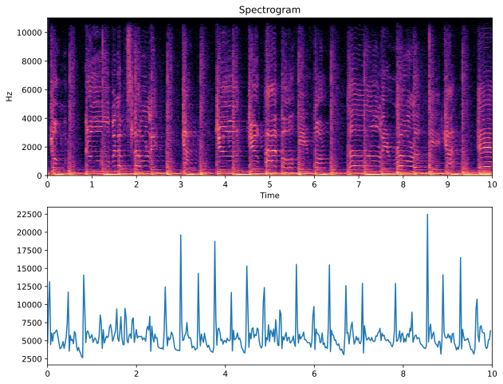

Week 8: Audio Novelty Functions
Chris Tralie
In this exercise, students will explore some of the building blocks of rhythm and tempo analysis in digital audio.
Consider the following audio clip (Click here to download the .wav file for it)
If we example the spectrogram, we notice that vertical lines occur around rhythmic events. Your goal in this exercise will be to devise a time series that peaks whenever many of the frequency bins in the STFT change, as shown below

Given an STFT Sdb, expressed in decibels, with M frequencies and N windows (an M x N 2D array), your task here will be to create a 1D array diff, which has N-1 elements. The jth element of this array should indicate how much all of the frequencies in the jth window of Sdb are changing. Below is some code to help you get started
Recall that to access an element at row i, column j of a 2D array S in numpy, you should type
But it may be easier if you can slice out entire columns at once and use element-wise numpy operations. To slice out the entire jth column and to save it as a 1D array, the code is
Autocorrelation
Recall that the convolution of an array with its reverse is referred to as the autocorrelation of that array, and it can be computed by taking the inverse fourier transform of the squared magnitude DTF of an array. Compute the autocorrelation of diff as follows:
- Create an array of zeros of length 2*len(diff) and put diff in the first half of this to zeropad (this makes sure the convolution will have enough space)
- Compute the DFT of this array
- Take the inverse DFT of the magnitude squared of this DFT
hop_length, and the sample rate is sr. What do you notice about this function?